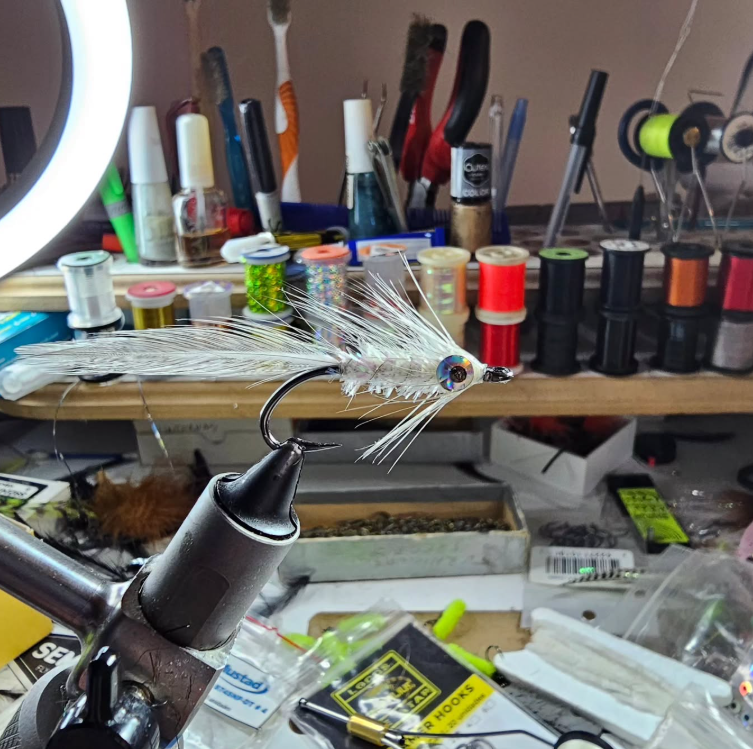

1. Preparación
Se selecciona el anzuelo y los materiales según el tipo de mosca que se desea atar.

HOMEMADE & CRAFTS FLIES
Descubrí el arte del atado de moscas, donde la creatividad y la precisión se combinan para crear señuelos artesanales para la pesca con mosca.
El atado de moscas es una técnica artesanal que consiste en utilizar distintos materiales sobre un anzuelo para imitar insectos y otros organismos que forman parte de la alimentación de los peces.

Para su elaboración se utilizan diferentes elementos:
Se selecciona el anzuelo y los materiales según el tipo de mosca que se desea atar.
Se fijan los materiales al anzuelo mediante hilo, formando el cuerpo y los detalles de la mosca.
Se realiza los ajustes finales para asegurar la resistencia y presentación de la mosca
Descubrí diferentes materiales y técnicas de atado con nuestros videos tutoriales.